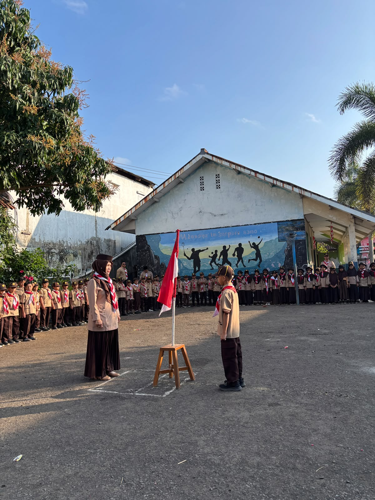

Menyambut Hari Pramuka 2026, SDN 1 Sukamanah Gelar Upacara Pembukaan Pesta Siaga

Tasikmalaya — Dalam rangka menyambut Hari Pramuka Tahun 2026, SDN 1 Sukamanah melaksanakan upacara pembukaan Pesta Siaga pada hari ini. Kegiatan tersebut menjadi salah satu momentum untuk menumbuhkan semangat kepramukaan sekaligus membentuk karakter peserta didik sejak usia dini.
Upacara pembukaan Pesta Siaga dibuka secara resmi oleh Mabigus SDN 1 Sukamanah. Para peserta didik mengikuti rangkaian upacara dengan penuh semangat dan tertib sebagai tanda dimulainya kegiatan Pesta Siaga.
Pesta Siaga merupakan kegiatan yang dikemas dalam suasana belajar, bermain, dan bergembira. Berbagai aktivitas yang dilaksanakan memberikan kesempatan kepada peserta didik untuk mengembangkan keberanian, kemandirian, kedisiplinan, kerja sama, tanggung jawab, serta rasa percaya diri.
Pada kegiatan hari ini, para peserta didik mengikuti berbagai aktivitas kepramukaan yang disesuaikan dengan karakteristik Pramuka Siaga. Kegiatan tidak hanya memberikan pengalaman yang menyenangkan, tetapi juga menjadi sarana pembelajaran untuk menanamkan nilai-nilai positif dalam kehidupan sehari-hari.
Melalui kegiatan Pesta Siaga ini, SDN 1 Sukamanah berharap semangat kepramukaan dapat terus tumbuh dalam diri setiap peserta didik. Nilai-nilai kebersamaan, gotong royong, kedisiplinan, kemandirian, dan kepedulian diharapkan menjadi bagian dari karakter peserta didik, baik di lingkungan sekolah maupun dalam kehidupan bermasyarakat.
Kegiatan ini juga menjadi bagian dari upaya sekolah dalam menyambut Hari Pramuka 2026 dengan penuh semangat dan kebersamaan. Dengan adanya kegiatan yang edukatif dan menyenangkan, diharapkan peserta didik semakin mencintai kegiatan kepramukaan serta mampu menerapkan nilai-nilai yang diperoleh dalam kehidupan sehari-hari.
Selamat Hari Pramuka 2026!
Salam Pramuka! 🏕️⚜️